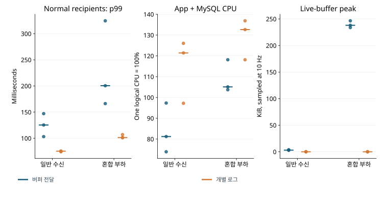
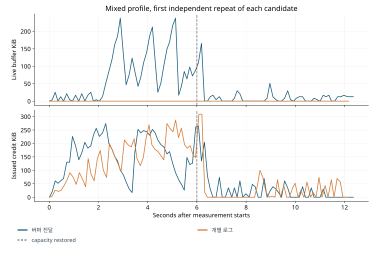

STORYBRIDGE · 설계와 검증
버퍼 기반 전달과 수신자별 로그 조회 비교
동일 메모리 예산에서 수신 지연·DB 조회량·CPU 사용량 비교
수신자별 live 버퍼를 유지하는 방식과 매번 DB 로그를 조회하는 방식을 비교했다. 로그 조회 방식은 버퍼 관리를 단순화하는 대신 같은 방의 수신자마다 본문 조회를 반복하므로, 저장·멱등성·로컬 원자 적용 조건과 전체 byte 예산을 동일하게 맞춰 이 비용을 측정했다.
로그 조회 방식의 정상 부하 history 조회는 674회에서 5,184회로 증가했고, 수신 지연은 줄었지만 CPU 증가율이 사전 기준을 초과해, 이 비교에서는 버퍼 기반 전달을 유지했다. 이후에는 수신자 간 조회를 공유하는 방식으로 중복 작업을 줄였다.
16연결·60 SEND/s·12초 조건에서 Python 영속 수신 하네스로 수행한 초기 비교다. 후속 공유 조회·재접속 개선은 별도로 측정했다. 최종 구현의 비교 결과
공통 구현과 전달 방식 차이
버퍼 기반 전달과 수신자별 로그 전달은 같은 Java/Spring/Tomcat, MySQL schema와 내구성, HMAC principal·고정 권한, 멱등 receipt, 메시지별 outbox, roomSeq, RR history, receiver ledger, close barrier, 독립 head/list 점검을 공유한다. 버퍼 기반 전달은 local publication의 본문을 즉시 연속 발행하고 finite buffer로 일시적인 수신 지연을 처리하되, gap·overflow가 발생하면 로그 복구로 전환한다. 수신자별 로그 전달은 본문을 보관하지 않고 최신 관측 O만 올려 bounded DB 작업을 깨운다.
수신자별 로그 전달의 첫 로그 작업은 같은 RR snapshot에서 권위 head와 첫 페이지를 함께 얻어, 매 힌트마다 head 조회와 본문 조회가 두 개의 독립 대기 단계로 나뉘지 않도록 했다. peer당 이미 실행 중인 작업과 유한 executor 예산을 확인하고, 추가 힌트는 O로 합친 뒤 해당 복구에서 고정한 목표 순번 H까지 연속 적용하고 다음 목표를 잡는다. 다만 발행 head 병합처럼 여러 메시지의 durable 발행 의도를 병합한 것은 아니며 outbox는 두 후보 모두 메시지별 outbox다.
첫 로그 전달 구현에서는 worker와 admission 설정의 불일치가 정상 팬아웃을 불필요하게 지연시켰다. 정상 p95 가 544~773ms였던 원본에서 읽기 진입 거절은 첫 실행 약 250 회로, 버퍼 기반 전달의 5 회보다 많았다. I/O worker 8 개가 공통 읽기 admission 4 개와 충돌하면서 정상 팬아웃까지 200ms backoff로 보냈다. 수신자별 로그 전달 worker를 4 개로 맞추자 첫 재측정 p95 는 약 66ms로 내려와, 전체 예산을 늘리지 않고도 내부 거절을 줄일 수 있었다. 마지막 비교는 이 튜닝 후 3 회씩이며 튜닝 전 6 회 원본과 계획 개정도 보존했다. 버퍼 기반 전달은 8 개 worker에서 이미 거절과 정상 지연이 작았으므로 같은 설정 변경이 유리하다고 가정하지 않았다.
전체 byte 예산은 구독별 256KiB로 맞추되, 버퍼 기반 전달은 window 128KiB와 live buffer 128KiB, 수신자별 로그 전달은 window 256KiB다. 두 후보의 window count는 32, 세션 count는 64 로 동일하므로, 수신자별 로그 전달이 적재 가능한 데이터를 단순히 더 적게 허용해서 메모리 이득을 만든 비교가 아니다. 전역 body 예산도 버퍼 기반 전달의 32+16MiB를 수신자별 로그 전달의 48MiB로 옮겼다. 관측 peak는 10Hz 표본이며 관측 사이의 순간 최대값이나 전체 heap 크기와는 다르다.
부하 구성과 측정 조건
정상 부하는 16 개의 실제 WebSocket, 초당 60 개의 고유 SEND, 512-byte 본문으로 구성하고, 1:1 방 8 개와 4 명의 두 탭으로 구성한 작은 그룹을 섞으며, 다섯 SEND 중 하나는 fanout 8, 나머지는 fanout 1 이다. 혼합 부하는 같은 16 개 연결과 초당 60 SEND, 4KiB 본문이며 60%를 인기 방에 보낸다. 인기 방의 8 명 중 2 명은 초기 commit마다 40ms를 지연해 인기 방 유입 약 36/s가 느린 적용 약 25/s보다 높은 상태를 만들고, 측정 6 초에 지연을 제거한다.
각 실행은 앱을 정지하고 이 프로젝트의 합성 DB 데이터만 초기화한 뒤 동일한 seed로 시작한다. 3 초 워밍업과 12 초 측정을 분리하고, 최종 감사에는 20 초의 기한을 둔다. 각 프로필/후보를 독립적으로 3 회 실행했다. 측정 순서는 버퍼 기반 전달이 먼저, 수신자별 로그 전달이 나중이었으므로 열·전원·다른 사용자 작업·OS cache의 순서 효과가 남는다. 따라서 작은 차이를 일반적인 우열로 해석하지 않는다.
처음 100 SEND/s 혼합 부하의 두 번째 12 초 반복에서 generator queue가 4 개의 도착을 탈락시켰고, 실제 도착률은 약 94.85/s, 스케줄 지연 p99 는 약 614ms였다. 이 실행은 원본을 보존하되 동일 도착률의 채택 비교에서 제외하고, 60 SEND/s로 계획을 개정해 두 후보에 같은 조건을 적용했다. 6 초 pilot의 통과를 장시간 발생 여력의 증거로 확대하지 않은 이유다. 이전 계획, 개정 계획과 제외 실행을 함께 제공한다.
비교 결과: 버퍼 기반 전달 유지
채택 기준은 동일한 저장·적용 보장 아래 일반 사용자 지연, 복구 완료, 전체 자원 비용과 구현 복잡성이다. 수신자별 로그 전달은 per-recipient live 본문 버퍼를 없애지만 DB 로그 조회를 늘린다. 따라서 buffer_bytes 외에 DB 조회와 프로세스 전체 비용도 비교했다. 아래 표는 원본에서 재생성한 전체 표본의 분위수이고, CPU는 실행별 평균의 중앙값과 범위다.
소규모 비교의 측정 소스는 이후 문서 개정과 분리해 고정했다. 이 페이지의 수치는 당시 버퍼 기반 전달과 수신자별 로그 전달의 결과이며, 이후 공유 조회나 재접속 정책의 효과를 포함하지 않는다.
| 후보 / 부하 | 고유 저장 | 고유 적용 / 의무 | 전체 적용 p50 / p95 / p99 ms | 정상 수신 p99 ms | stack CPU % 중앙값 (범위) | history 쿼리 합계 |
|---|---|---|---|---|---|---|
| 버퍼 기반 전달 / normal | 2,160 | 5,184/5,184 | 47.6 / 69.2 / 129.2 | 129.2 | 81.2 (73.9–97.3) | 674 |
| 버퍼 기반 전달 / 인기·일반 혼합 | 2,160 | 11,232/11,232 | 62.0 / 1430.7 / 2211.9 | 204.4 | 105.1 (103.7–118.1) | 833 |
| 수신자별 로그 전달 / normal | 2,160 | 5,184/5,184 | 48.6 / 66.6 / 75.5 | 75.5 | 121.4 (97.2–126.0) | 5184 |
| 수신자별 로그 전달 / 인기·일반 혼합 | 2,160 | 11,232/11,232 | 56.0 / 1371.4 / 2076.7 | 103.2 | 132.7 (118.1–136.9) | 6949 |
좁은 화면에서는 표를 좌우로 이동할 수 있습니다. 수치와 단위는 원본의 반복별 값을 유지했습니다.

이 소규모 비교에서는 수신 지연 단축만으로 로그 전달을 채택할 이유가 충분하지 않았다. 정상 pooled p99 는 버퍼 기반 전달의 129.2ms에서 수신자별 로그 전달의 75.5ms로 줄었지만, 두 후보 모두 사전에 정한 정상 3 초 완료 기준을 충족했다. 반면 버퍼 기반 전달의 정상 live buffer 관측 peak는 3.75KiB에 불과했고, 로그 전달의 전체 RSS 감소도 확인되지 않은 상태에서 CPU 증가가 사전 상한 20%를 넘었다. 따라서 이 조건에서는 버퍼 기반 전달을 유지했으며, 더 엄격한 tail 목표나 더 큰 수신자 집합까지 같은 판단을 적용하지는 않았다.
서버·DB·하네스 자원 사용량
앱 이외의 비용도 비교하기 위해 실제 JVM·mysqld·하네스의 CPU와 working-set RSS, 호스트 전체 CPU/가용 메모리를 같은 시계열로 기록했다. CPU 100%는 프로세스 기준 한 논리 CPU이며, 호스트 100%는 18 개 논리 CPU 전체다. 앱+DB 합계와 하네스를 포함한 호스트를 분리한다. MySQL buffer pool 256MiB, redo 128MiB, JVM heap 384MiB를 공통으로 두었다. ActiveProcessorCount=4 는 JVM의 병렬도 힌트이며 OS CPU quota 또는 물리 코어 전용이 아니다.
클라이언트 SQLite FULL commit, JSON 송수신량, DB history query 수와 sender 물리 재시도도 비용에 포함했다. loopback JSON byte는 TCP overhead·TLS 비용을 포함하지 않으며, TLS·WebSocket 압축은 두 후보 모두 비활성화했다. 계측은 양쪽 모두 10Hz이며 추가 HTTP/SQL과 Python 스케줄 비용이 있지만, 계측을 완전히 끈 별도 A/B 비교를 수행하지 않았으므로 계측 오버헤드의 절대 크기는 미확인이다.
버퍼 기반 전달의 정상 부하 버퍼 peak가 매우 작으므로, 수신자별 로그 전달이 그 버퍼를 제거하더라도 JVM/DB 전체 RSS에서 의미 있는 감소를 보장하지 않는다. 반대로 느린 수신자 수·본문 크기·burst가 커지면 수신자별 로그 전달의 본문 보관 제거가 중요해질 수 있지만, 이 비교에서는 해당 조건의 처리 용량을 측정하지 않았다. Redis cache, shared room load, 발행 head 병합, RabbitMQ 구성을 추가하면 별도 비용과 실패 경계가 생기므로 이번 결론을 바꿀 근거 없이 후보를 늘리지 않았다.
수신 의무와 DB·로컬 원장의 독립 대조
수신자 의무는 실행 전에 고정한 logical recipient·방·탭 계획에서 만들어, 예상 수신자를 서버 route registry와 독립적으로 계산한다. 입력 key/hash, DB message·receipt·outbox·counter, 실제 SQLite projection의 messageId/hash/연속 seq를 독립 대조한다. 재접속한 연결은 동일 recipient 저장소의 미완료와 연결하며, bootstrap·종료 이후에도 기존 미완료 전달 의무를 유지한다.
지연 시각은 한 Python process의 perf_counter_ns domain에서 기록하되, SEND 예정 시각, 응답을 받고 sender receipt를 로컬에 기록한 시각, 수신 SQLite COMMIT가 반환한 뒤의 시각을 사용한다. SQLite row를 INSERT할 때의 준비 timestamp는 실제 적용 지연으로 쓰지 않았다. DB storedAt과 JVM monotonic 원점을 Python 원점과 같다고 가정하지 않는다. STORED 지연에는 서버 응답과 sender의 로컬 결과 기록 시간이 모두 포함된다.
완료 표본의 분위수와 함께 고유 저장·예상 전달·고유 적용·3 초 내 완료·미완료·물리 재시도·generator drop을 보존했다. 실행별 p99 를 평균한 값을 pooled p99 로 쓰지 않고, 이 표의 pooled 값은 원본 inputs/obligations를 합쳐 다시 계산했다. 기간 내 정상 수신 완료 기준은 3 초 99.9%이고, 영구 미적용 시험의 24 개 미완료는 성능 표본에서 지워지지 않고 별도의 실패 분류로 남는다.

| 후보 / 부하 | STORED p95 / p99 ms | 정상 3 초 완료 / 의무 | 전체 3 초 완료 / 의무 | 물리 SEND 시도 | 하네스 / 호스트 CPU % | 앱+DB RSS peak 합계 MiB | 고정 H 복구 ms · 3 회 |
|---|---|---|---|---|---|---|---|
| 버퍼 기반 전달 / normal | 31.0 / 32.7 | 5,184/5,184 | 5,184/5,184 | 2160 | 27.7 / 9.1 | 700.1 | 해당 없음 |
| 버퍼 기반 전달 / 인기·일반 혼합 | 43.3 / 67.3 | 8,640/8,640 | 11,232/11,232 | 2285 | 67.1 / 13.0 | 701.7 | 378.1, 421.8, 509.7 |
| 수신자별 로그 전달 / normal | 30.7 / 32.9 | 5,184/5,184 | 5,184/5,184 | 2160 | 30.7 / 12.2 | 691.6 | 해당 없음 |
| 수신자별 로그 전달 / 인기·일반 혼합 | 42.1 / 62.7 | 8,640/8,640 | 11,232/11,232 | 2266 | 73.6 / 14.4 | 704.2 | 296.3, 371.5, 341.9 |
좁은 화면에서는 표를 좌우로 이동할 수 있습니다. 수치와 단위는 원본의 반복별 값을 유지했습니다.
복구 시간은 6 초에 처리 여력을 복원한 뒤 그 순간 고정한 H를 두 느린 수신자가 모두 로컬 commit할 때까지다. RSS는 각 프로세스 관측 peak의 합이며 같은 순간의 최대 합계가 아니다. 하네스 CPU는 논리 CPU 한 개, 호스트 CPU는 장비 전체를 100%로 삼는다. 최종 12 회에서 미완료·감사 위반·발생기 drop은 모두 0 이다. 원본 summary에는 각 실행의 지연 p50/p95/p99 와 재시도·거절·자원 시계열이 연결된다.
적용 시험과 남겨 둔 실패 이력
T01~T44 중 A의 공통 35 개와 메시지별 outbox E05, X02~X07 을 연결했다. T15~T18/T31~T32/T44 는 broker·다중 gateway 전용, T19/T20 은 선택하지 않은 Redis/메시지 cache 전용이므로 해당 없음이다. E01~E04/E06~E08 과 X01 도 미선택 구조에 해당하므로, 이들 항목을 제외한 사실을 통과로 표시하지 않았다. 한 시나리오가 여러 계약을 확인할 수 있지만 테스트 ID 개수만으로 모든 시간 순서나 장기 부하를 증명하지 않는다.
아래 표는 초기 실패도 포함한다. 구독 BUSY 재시도 누락, DB 오류 매핑, Windows MySQL 실제 PID, IndexedDB 동기 abort, 실행 중 jar를 다시 빌드하여 클래스 로딩이 깨진 진단을 각각 구분했다. 마지막 문제는 실행용 jar를 hash별 immutable 사본으로 복사하여 방지했다. 초기 dirty 진단은 최종 소스와 동일하다고 표현하지 않았으며, 관련 수정 후 회귀와 대표 측정을 다시 수행했다.
| 계약 / 시나리오 | main 통과 근거 | 수신자별 로그 전달 통과 근거 | 보존 실패 수 |
|---|---|---|---|
| T01 T02 T07 identity-order | 검증 결과 | 검증 결과 | 0 |
| T03 T04 T06 transaction-boundaries | 검증 결과 | 검증 결과 | 0 |
| T08 subscribe-boundary | 검증 결과 | 검증 결과 | 0 |
| T09 T10 T29 reversed-gap-last-loss | 검증 결과 | 검증 결과 | 0 |
| T11 T13 T27 T39 X02 slow-ack-recovery | 검증 결과 | 검증 결과 | 0 |
| T21 T42 retention-snapshot | 검증 결과 | 검증 결과 | 0 |
| T22 T23 T33 read-auth-list | 검증 결과 | 검증 결과 | 0 |
| T30 T41 X07 retiring-credit | 검증 결과 | 검증 결과 | 0 |
| E05 poison | 검증 결과 | 검증 결과 | 1 |
| T26 T28 T37 local-crash | 검증 결과 | 검증 결과 | 0 |
| T05 app-crash | 검증 결과 | 검증 결과 | 0 |
| T40-storage storage-audit | 검증 결과 | 검증 결과 | 0 |
| T24 T36 X04 reconnect-인기 방 | 검증 결과 | 검증 결과 | 1 |
| T14 T25 churn-epochs | 검증 결과 | 검증 결과 | 0 |
| T21 T37 T38 X06 local-quota-retention | 검증 결과 | 검증 결과 | 0 |
| T35 database-restart | 검증 결과 | 검증 결과 | 2 |
| T14 T41 retire-timeout-tabs | 검증 결과 | 검증 결과 | 0 |
| T03 T04 T28 X03 process-commit-crash | 검증 결과 | 검증 결과 | 0 |
| T34 X05 list-order-pages | 검증 결과 | 검증 결과 | 0 |
| T12 T43 blocked-write | 검증 결과 | 검증 결과 | 3 |
| T26 T28 T14 X03 combined-local-restart | 검증 결과 | 검증 결과 | 0 |
| T39 bounded-nonprogress | 검증 결과 | 검증 결과 | 0 |
| T23 T25 actual-admission-caps | 검증 결과 | 검증 결과 | 0 |
| T15 cross-gateway | 별도 실행 없음 | 별도 실행 없음 | 1 |
| T16 T31 T32 X01 topology-recovery | 별도 실행 없음 | 별도 실행 없음 | 1 |
| T17 broker-outage | 별도 실행 없음 | 별도 실행 없음 | 1 |
| T18 gateway-after-broker-ack | 별도 실행 없음 | 별도 실행 없음 | 1 |
| T44 queue-overflow | 별도 실행 없음 | 별도 실행 없음 | 1 |
| T06 T07 duplicate-no-route | 별도 실행 없음 | 별도 실행 없음 | 0 |
| T02 T23 ws-keyed-admission | 검증 결과 | 별도 실행 없음 | 3 |
| T19 T20 T21 T22 representation-cache-boundaries | 별도 실행 없음 | 별도 실행 없음 | 1 |
| T08 T09 T10 live-during-head-snapshot | 별도 실행 없음 | 별도 실행 없음 | 0 |
| T01 T02 T30 T43 partial-inbound-contract | 별도 실행 없음 | 별도 실행 없음 | 0 |
| T12 T30 T39 partial-inbound-global-budget | 별도 실행 없음 | 별도 실행 없음 | 0 |
| T06 T07 E04 expired-batch-lease | 별도 실행 없음 | 별도 실행 없음 | 0 |
좁은 화면에서는 표를 좌우로 이동할 수 있습니다. 수치와 단위는 원본의 반복별 값을 유지했습니다.
관련 실험과 원본 자료
이 단계에서 추가 구조 변경은 비교하지 않았다. 이후 공유 조회·표현 캐시를 실제 구현하면서 수신자별 중복 작업을 줄이는 방향으로 탐색을 이어 갔다.
실행별 CSV · 원본에서 재계산한 집계 · 시험 전체 인덱스. 각 실행에는 입력, 수신 의무, 실제 client commit event, DB 감사, 자원 시계열, SQLite 원장을 보존했다. 실패·제외·복구 불가 원본도 함께 남겼다.
제약 사항
이 비교에는 정상 수신 3초·CPU 증가 20% 기준을 적용했다. 후속 k6 혼합 부하는 저장 150ms·수신 250ms·복구 30초를 기준으로 평가했다.